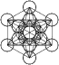
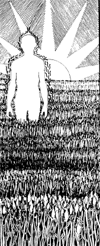

The Scarlet Thread:
The Path to Inheritance

What
is man, that thou art mindful of him;
and the son of man, that thou visitest him?
For thou hast made him a little lower than the angels,
and hast crowned him with glory and honour.
The prevailing understanding is that man is a trinity, of sorts-- comprised of body, soul, and spirit. This view, however, is not sufficient to satisfy some difficult statements in scripture; nor is it useful in learning of the righteousness of Elohim or of the destiny of man; neither is it consistent with even scientific thought, which generally recognizes conscious, sub-conscious, and unconscious levels of mind, all of these being fed and animated by the life force-- the libido, or id.
Of the three generally recognized components of man, only spirit is immortal by nature, according to scripture; and as spirit is the gift of hwhy and returns to him at physical death, one wonders how creation could serve perfection of soul to mankind's benefit, or by what logic mortals could deserve an eternal condemnation for failing to achieve that end. Nowhere does the scripture speak of an immortal soul, though soul can put on immortality, and yet there must be an immortal component to every incarnation, else the reason for our trials and tribulations here, below, can only be irrational-- the whim of capricious omnipotence playing with pawns. When our view of self is askew, can our view of Elohim be any better? Misunderstanding ourselves and maligning our God, how are we to bring light to the world?
The great lamp that shone first in Galilee proclaimed of John the Baptist, that John was Elias, while John specifically said that he was not, and neither was he that prophet. John was mistaken? This greatest of men born by woman? I think not. There must be a cohesive interpretation by which the statements of John and Y'shua are congruent; for in Mashiyach were found, not yea and nay, but yea. If apparently contradictory statements are found in scripture, the explanation can only be that the reader has yet to come to the paradigm of affirmation.
{kind=link}
Further, Y'shua said of Avraham, Yitschaq, and Yaaqov, that they are not dead, and that those who see them as being dead do greatly err: among whom we must also number Peter, if we judge only by the letter of his words concerning the buried patriarch, King David. Again, there must be a level of interpretation in which all testimony is congruent, if scripture is true; and I began my study of these matters by taking hold of the affirmation that la is Father of the living, and by then scrutinizing the New Testament scriptures most closely associated with a finality of death: those dealing with blasphemy against the Holy Breath.
I found that, according to the letter, those statements also differ somewhat: Matthew says, "but whosoever speaks against the Holy Ghost, it shall not be forgiven him, neither in this world, neither in the world to come." Mark says, "he that shall blaspheme against the Holy Ghost never has forgiveness, but is in danger of eternal condemnation." Luke says, "but unto him that blasphemes against the Holy Ghost it shall not be forgiven": never forgiven, period-- however one might interpret Matthew's world/age caveat-- but yet, according to Mark, only in danger of eternal condemnation!
Many believe that only the greatest sinners are guilty of this greatest sin. However, blasphemy against the Spirit of Truth is not limited to vocal protestations of disbelief concerning the words of Moshe or of Yahushúa, or to the misuse of holy names, or to the defilement of spirit through behavior.
The master of Torah, who judges according to inward thought, taught that "Whenever you have done this unto one of these, the least of my servants, you have done it unto me"; for "Him that receives you receives me, and him that receives me receives him who sent me." Argued differently, to offend in one point is to risk being guilty of all. Sin is error, and error has been a constant in my natural life, and in my spiritual life as well. I'm guilty, without doubt; but whether I'm therefore condemned is another matter.
We're all on the block; for we all have ignorantly blasphemed the Lord of Glory in our midst by some cutting remark or some deed that warred against the spirit of a friend. We all, at one time or another in our lives, have called the truth a lie and have rejected its messengers, thus crucifying Truth in unbelief. One might claim that the sin of blasphemy can only be committed willfully, purposefully; but-- willful or not-- it has the same effects in the lives of those who commit it carelessly, ignorantly: it prevents them from nourishment of the Truth; and it blocks access to Truth for those upon they have influence, as well. Far from being a rare sin, blasphemy against the Spirit of the Holy is a common sin. Indeed, it was the first sin.
Realizing I was vulnerable to the ultimate condemnation (we must live by every word), I recalled Ezekiel's saying: "The soul that sins, it shall die": an unequivocal statement! To what, then, does salvation pertain, since all have sinned and since all sinning souls are under an unequivocal sentence of death? We believe that the wages of sin are superseded by the gift of Life to those who walk in faith; but how are we to receive this gift, since we have all characterized Truth as falsehood at some time in our lives, our souls thus falling forfeit to the most solemn judgment?
The Father's words in the mouth of the Son are, "Unless you believe that I AM, you shall die in your sins." Well, belief is the gateway to ransom, but not of sinful souls; for by the word of no small prophet, sinners are under an unequivocal sentence of death! Yes, when we receive of the Father's Life in the Son, we become not reformed or realigned souls, but new creatures: we walk in the newness of the Father's life, and not as reformed sinners. However-- more troublesome, yet: the new creature Paul (or him speaking through apostle Shaul) characterized himself as the foremost/first/chief sinner! Where, then, lies the hope of men living less careful lives? For it is written, "If we say we have no sin, we deceive ourselves, and the truth is not in us."
In answer to these questions, I turned to the words, "He that overcomes shall not be hurt of the second death." This scripture did not fully answer my concerns, but it became very like a lifeline, pulling my mind through the inquiry. Some hold that the first death is a child's physical birth-- its incarnation into flesh; others see the first death as the spiritual end of the man of sin, that the child of light can be born. Although both views have merit for certain lines of inquiry, I believed, from my youth, that the second death could be none other than the death of the sinful soul, subsequent to the death of the physical body: for it is given unto man once to die, and after that the judgment. Note that the scripture does not say that those who overcome shall escape the second death, but that they shall not be hurt of it, by it.
I believe that the atonement for sin that comes by the voluntary shedding of the lifeblood of him who knew no sin provided a scarlet thread by which we can escape the overthrow of perdition: that this atonement makes possible the process of salvation, bringing us near the congregation of Y'Sharal for the purpose of perfection. Strangers no longer, we can drink of the Living Waters apportioned to God's Children, escaping the fate of the old man-- the karmic husk that clings to the threads of true Life, hoping for atonement. No longer the prime mover, the old man continues his grumbling in subservient sacrifice to the authority of the Life now found in the New Man, the Son of Man, the Complete Adam. Twins operating under the dictums of two laws are struggling to the birth in the wombs of our tabernacles; and they are either empowered or shackled by our choices in the Spirit.
Atonement (at-One-ment) pertains to receiving the spirit of adoption, the fruition of which is the redemption of the celestial body (not of the sinful soul, which must die; nor of the physical body, because flesh and blood cannot inherit). The book of Romans testifies that we are, simultaneous to spiritual adoption, already the children of Elohim by an immaculate conception through the Holy Spirit (1 Cor. 4:15; Mt. 23:9). We agree with the apostles, therefore, that salvation is an ongoing birth process that must be worked out in our natural lives, and that the manifestation of the sons of HaShem has yet to appear in its fullness because they are yet encumbered by the karmic swaddling clothes of the sinner: the fullness of the Light in them is yet hidden in this age of worldly dominance, this third measure of meal.
We share Serai's triumphal laughter at the promise of a child in her old age; for what can be the mother of this holy child promised to each of us, other than our own, old and imperfect souls? For that which is born of the Spirit is spirit, while that which is born of the flesh is flesh. Soul is the medium in which spirit and flesh interface: the mortal soul is the body formed by the Breath of Spirit, and it monitors and integrates the sentient faculties of the flesh.
As living souls that walk upon the path of atonement, we take up our crosses daily and crucify the old man on them, that the new man might live in us. What is the old man, other than the sinful soul? What is the new man, other than the developing soul of the new creature? By following in the footsteps of HaMashiyach, we work out our salvation by faith, sharing the interest accrued on the wages of sin. Men of spots and blemishes could never pay the debt; but the teachings of sowing and reaping make it clear that there is somewhat to repay, and that the walk in Messiah is the narrow path to Life in new garments that must be purchased, if we are to come to a balancing of accounts. Thus it is written of the thieves destined for their places at Golgotha, that if the Anointed of Yah shall make us free, we are free indeed.
The holy, embryonic child we carry in the temple of our bodies is wrapped in swaddling clothes-- in the convulsive garments of the soul of the old man (Lk. 17:34). Are we not instructed that a woman will be saved-- not hurt of the second death-- if she continue in child bearing? Let us not lose hope, therefore. The travail of Y'Sharal within the wilderness is long and difficult because of sin, but HaShem promised that he is able to bring us to the birth-- but again, each in his order.
Brothers are for adversity. Our zeal for the new man being born in us makes us ashamed of the swaddling garments belonging to the old man; and the temptation is to deny them, to conceal them, to suppress them. This is not the denial of self of which the scriptures speak; for he who would save his life will lose it. This kind of denial is the pitfall of hypocrisy; and it aborts the processes of birth. Yet further, to expect our spirits to kill the old man through denial is to embrace the processes of death-- to become whited sepulchers; for we have somewhat to repay for the bones buried in the past, and we cannot enter into freedom until the last farthing is paid. Denial of self is without caveat and must answer to the visceral witness of the Indwelling: we must abdicate enthronement of our wills to the will of HaShem, so much as is possible at every moment in every circumstance.
The old man in us is broke. The only thing he can offer for errors of the past is recognition of guilt. It's the new man who must pay, by purchasing of Messiah new garments through our service in his steps, that our nakedness not be revealed. This is understanding is good and very good; for it is the garments of the sinners we have been that determine the mission fields that will be expedient, through our service, for what we are becoming: both for working out individual perfection and for the efficacious spreading of the good news of the Kingdom of Heaven unto all peoples, everywhere.
The apostle Shaul speaks of the two laws of sin and of grace operating simultaneously within himself. The intersection of these laws is the essence of the cross: by a narrow focus on their interactions, we witness-- step by step, in our lives-- the righteousness that is ours through the second Adam as it victoriously confronts and cancels the unrighteousness that entered by the first: the triumphs of each day contribute to the maturation of the new creature unto its state of perfection, due upon the last day. As the dynamics of the cross operate within us, bodily, the intersection of these two laws bring us into alignment with the measurement of the Godhead that is in Messiah.
These two laws-- one pertaining to the old man, and the other, to the new-- are as the sons (words, works, formulations) of Yahúdah (praise) by Tamar (uplifted-ness): they are as Zerach (the arising) being supplanted at birth by Perets (the breach). These two sons war together in the spiritual womb of the new creature through struggle that is congruent with the process of salvation, itself. Like with our shortcoming at Ephesus, Zerach appears first, to our joy, but succumbs to a falling away in the emergence of Perets. Nevertheless, the election of the firstborn belongs to him who bears, at his birth, the sign of the scarlet thread. In the fullness of time, the fruits of the falling away shall be as though they had never been.
The appearance of the finger of Zerach is as the first sign/wonder of our experience of salvation. When Zerach is withdrawn back into the spiritual womb until time of his true birth, it is on behalf of the birth brother Perets, who is comparable to the karmic debt of the sinful soul comprising the old man; for only after full presentation of the parameters of Perets-- of the breach-- can Zerach be freed to take his place in the lineage of Y'shua: all debts having been paid; every accuser, cast down; and every brother, lifted up.
At physical death, the body returns to the grave of earth, where there is no understanding; the spirit returns to HaShem, who gave it; and the soul-- if it is counted as worthy-- is not hurt of the second death: does not go backwards, forced to relearn painful lessons of the past. This understanding means that the second death for those who have, to great measure, overcome is a change for purpose of extension: not an end, a termination.
But what, then, of the fathers to whom the promises pertain who died owing wages of sin? For of them, as also of us, it is written, "There is none that is righteous"(doeth good), "no not one"! Having died in unrighteousness, are they now living in a purgatorial Sheol or Gehennah? If so, are we to understand Avraham's bosom to be a kind of hell! Further, the "good" thief on the cross, with little to recommend him, was promised paradise on the day of his physical death. We can argue that the thief died after the cross and the patriarchs before; but the Lamb of Elohim was slain from the foundations of the world; and Avraham and those with him are clearly pictured in the gospels as residing in paradise previous to the temporal cross.
There is a higher interpretation of the patriarchal functions than can be understood from the literal Torah stories, but the words of spirit and life must have their effects at every level of interpretation, in harmony with the extension capabilities of the Crown Diamond display and the developmental levels of God's children and the words, "in him was yea and nay, but yea." Spiritual land is promised to Avraham's seed and to Avraham, himself. By what means, then, does he inherit it?
This is what I understand concerning man: the body is the outer garment; the soul is the inner garment; the angel is that which is clothed; and the spirit that proceeds from the Father is the life and the unity of the entire organism. It is given man once to die. Take away any one of these elements, and man is no longer man: he becomes a disunity, with his constituent parts being extended to their realms, or localities, of origin-- with them being gathered to their fathers.
In fact, there is no death; there is only extension from one form to another, as also from one state of being to another. The natural law of the conservation of energy should settle that question, even for non-believers. If thought is electrical impulses carried in the nervous system, it cannot be lost; it can only change. Look for death: where is it? It is the misperception of man! Even a natural corpse is full of life, though the life of man is absent. Death is extension, and the questions it raises have relevance only as they teach us about life.
The body does not inherit, and no man has power to retain the spirit. If we settle the core of being upon the human soul, what is left to be either hurt or not hurt of the second death, given that every soul that sins must die? The second death, if such were the case, would be universal oblivion! The core of our being, on Earth as it is in heaven, must be in the angelic: as it is written, "Take heed that ye despise not one of these little ones; for I say unto you, that in heaven their angels do always behold the face of my Father which is in heaven."
The chariot vision of man explains John/Elias. John was not Elias: he was a soul named John; the soul named Eliyahu/Elias lived and died in another age. John was Elias: he was the spirit and angel of Elias returned to Earth as a soul named John. Yahushúa, through the ministry of Y'shuah, turned the age upside down: he taught us that our roots are in heaven; and because our angelic roots are there, we rejoiced at the creation of Earth. Further, because salvation pertains to the inward thought of the creature made of dust, those angels not buried in the flesh greatly desire to look into the good news concerning man. As humans, we are in the vital interest of the heavenly hosts. Barakla!
The immortal angel is a fiery grub, the chrysalis of the soul; and the body of flesh is the cocoon. The transformations that occur in life-- good and bad-- are not from one thing to another thing; they are transformations within the same thing. It is by virtue of this fact that the angelic Sons of Elohim, seeing that the daughters-- the spiritual wombs-- of mankind were pleasant, were able to father "sons" in them, contributing to the manifestation of the mighty men of olden times.
The angel is the first formulation of Spirit. It is naked fire. Delineated as a spark within the consuming fire of HaShem, the angel seeks a house capable of withstanding its fire; but it is incapable, on its own, of inhabiting a body without causing its ultimate dissolution by burning it up. The angel is a pillar of fire, a tongue of fire, a worm of fire. It achieves stability only when positioned in a lamp. As the natural element of the angelic, "worm" is a fitting metaphor for fire; for it is all slopes-- all eshdat-- "the manner of fire." It climbs tentatively, it burrows, it consumes its path. Divided, it is cloned. Water, in its free state, is its natural peril. Knowing this to be true, the angels therefore rejoiced at the creation of Earth, and of mankind, upon it.
When the angel incarnates in a cocoon of flesh, the soul's life and its end commences with the body's first breath; however, the soul's life at birth is but the beginning of a process of transformations that will lead to eternal Life. The destiny is certain, but the stages along the way depend upon the soul's progress in the will of hwhy. When that which is perfect is come, imperfect stages fall away. We have a foretaste of this truth even now, as we daily mature, stage by stage, walking in Y'shua's footsteps towards perfection.
Spirit is the Breath of Life; and the life of the body is in the blood: in Adam (in man), the fire/angel/man/cya incarnates in the blood. Natural food is to sustain the body is metabolized in the bloodstream after the manner of natural combustion, as is spiritual food, wherein oxygen/air (the agency of Spirit) feeds the fires of transformation. Without the Breath and its inward fire, the body dies and the soul is surrendered to the angelic for spiritual judgment.
The angel's immortality consists of its measurement in HaShem's Spirit: the angels are his words, his messengers, even as Yahushúa is his Word, the summation of his thought. And HaShem's words do not fall to the ground in vain. God is not mocked: his power is not defeated by the babblings of blinded men.
The body's mortality is due to its dependency on the light energies of the incarnated angel; and the angel's immortal, celestial body is dependent upon the life led as man. By means of their lives in the bodies of man, immortal angels put on mortality; and by means of attaining perfection of the mortal soul, the naked angel shall gain the immortal soul garment, which is the celestial body.
To the degree that the blood (a lake of fire) interacts with the cells of the body in an incarnation, the soul is energized: the sentient capabilities of the cocoon/flesh are activated, and the life of the angel becomes manifest in the faculties of the host's shell (his body). Thus, we see soul/p as the expression of the life within; and it is that. But it is also more than that; for the body/cocoon is a womb that can be impregnated by the Angel of the Presence; and the immortal soul/b (the, butterfly, the celestial body of light) is the embryonic child of that union. The spiritual woman can encompass the spiritual man, allowing that man to be born again without undergoing physical death. Those in whom this is accomplished pass from life unto life without the taste of death.
The lake of fire above is HaShem. Drawing from there, he
sends forth his angels/sparks by means of the holy flame of his Word:
God breathes them, speaks them. One by one, he sends them forth to the
Earth by command. It is these sparks of HaShem that become man/cya. As
natural man/mda, the flesh/hmda glows
with the light of the fire (the divine spark/ )
that is incarnated within
the cocoon of the earthen tabernacle. This glow is soul as expression.
)
that is incarnated within
the cocoon of the earthen tabernacle. This glow is soul as expression.
As God's expression/ , the
soul is the Son/work of Man/mda (Ps. 8:4): the glow within is seen
without. As an ectoplasm/child/b,
the mortal soul is the son of man/cwna (Ps. 144:3) and
must be transformed by
mortal experience, as preparation for the immortal garment suitable to
the state of being to which the expressed words of HaShem must
attain: a good tree bears good fruit.
, the
soul is the Son/work of Man/mda (Ps. 8:4): the glow within is seen
without. As an ectoplasm/child/b,
the mortal soul is the son of man/cwna (Ps. 144:3) and
must be transformed by
mortal experience, as preparation for the immortal garment suitable to
the state of being to which the expressed words of HaShem must
attain: a good tree bears good fruit.
Shall a woman/hca ("garment"/the mortal flesh) encompass a man/cya (an immortal "fire being")? Yes; for as the spiritual woman continues (is extended) by spiritual childbearing, she provides for the transformation of the cya/man by her inward extension.
That which we have been is the womb of our becoming, the emergence of which is Zerach, a "lifting of the inner light." As recounted previously, Zerach-- the emergence of the light body (soul/b)-- appears first, but is quickly swallowed up by Perets-- by the faulty expressions (soul/p) engendered in the experience of mortality/cwna. When those expressions have been fully measured and comprehended, they are overcome; and Zerach is safely born, bound by the scarlet thread.
Not every incarnation produces a butterfly (perfected soul/light body): adversity exists; breaches occur. The angel failing to complete its transformations in an incarnation is not lost, however: it remains immortal, a spark of HaShem. It is gathered, again, into the lake of fire above, where it is purged and purified. The aborted soul that was in process of formation in an incarnation but failed to reach perfection is lost; but that loss does not involve the life of the angel. The worm that perishes not, the immortal angel can be sent forth again, into a new cocoon according to the Wisdom of HaShem.
The celestial body is being formed by the release/surrender/p of the full nature of the light energies (angelic character) resident in an incarnation. The mission is alignment with the perfect unity of the Life Force, the Spirit of HaShem; and the celestial body is the reward. Partial alignment does not warrant eternal identity, which is the reason we are commanded to become perfect.
This is analogous to the formation of the physical body within the natural womb. A partial release of cell energies creates an imperfect body/soul/b, which cannot be sustained. But unlike the natural mother, who survives childbirth by retaining those things necessary for her own life, the chrysalis of the soul must utterly abandon itself to complete transformation if it is to emerge from the cocoon in a new form. This abandonment of self releases every expression within the chrysalis: the scarlet thread is entirely spooled from the skein of yarn above into the garment of light forming below.
I've written many words and have failed to write clearly. Discussing soul, as the seat of expressions p and soul as the seat b of the incarnate angel is like dealing with the double helix of the DNA string: it's possible to make the jump between the two understandings, but it's not an easy matter to explain exactly what you're about.
I've had man visions of people I know, seeing them in their angelic form as they were previous to incarnation. That form is an unstable column of fire, like a flare of the sun; and its glow must be scaled back to that of a fiery grub for purposes of incarnation. In comparison to the light body we are destined to attain, the earthen body is like a bushel over a lamp: it obscures the light within; and the light within must eventually burn up the earthen vessel, releasing the incarnated fire. To develop an enduring house, our souls must be fully transformed.
For it to appear, light must inhabit a medium. That medium is Messiah, the Interface. Without a medium to differentiate between them, light and darkness are indistinguishable. "Space" is black in full sunshine because there is nothing to receive and reflect the light. Praise The Name of HWHY, who divides light from darkness!
It is written, "...the times of this ignorance, HWHY winked at," news of which encouraged the imperfect souls. Thus, now, "we see through a glass darkly..."; for the eye of HWHY outshines the sun, and a soul that is as an unpolished diamond cannot adequately measure or convey the light of the Father's countenance. The soul's imperfection is the measurement of the darkness within. Once the pearl of great price is fully formed, however, we shall see God "face to face"-- that is, "face upon face"; for it is also written: "I know that in my flesh shall I see HWHY ." Praise The Name HWHY , and may His faces shine from within each of us. Shalom.
|
site |
FONT |
book |